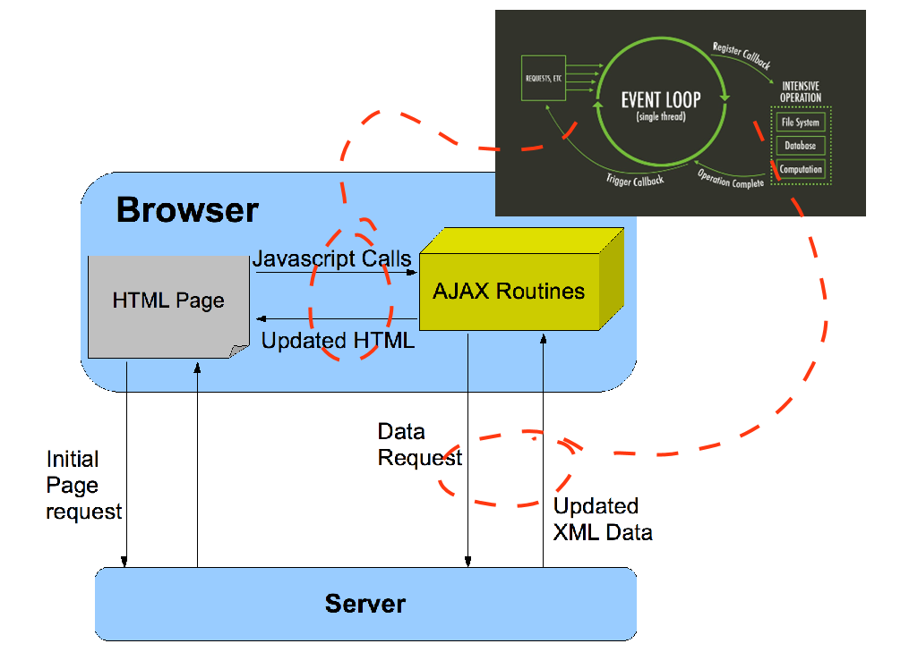

JS - Purpose and Evolution
What is JS
JS (JavaScript) is an interpreted, dynamically/weakly typed, multi-paradigm scripting language with first class functions. JS offers the functionality component to the triad of HTML-CSS-JS. JS has become indespensible for browser interactivity and is universally supported by all browser software and has seamless integration into the DOM structure. JavaScript is not only found client-side, it is also behind node.js which is a powerful non-blocking server-side technology. Syntactically, JS looks similar to C or Java.
Browser Wars
JS was created by Brendan Eich for Netscape in 1995 while attempting to integrate a scripting language into their browser in order to add client-side interactivity. One of the criteria was for it to be syntactically similar to Java despite the language being fundamentally different. The name JavaScript is more of a marketing decision due to Java being popular in the mid 90's.
The first standardised version of JavaScript released by ECMA in 1997. It was hoped this would help to stop the browser war between Netscape and Internet Explorer which used mircrosoft's scripting language JScript. However Microsoft pushed Internet Explorer with it's full financial might in the late 90's which extended the JavaScript/JScript war despite ECMA releasing further refinements and iterations of JavaScript. This all led to the stagnation of in-browser scripting technology in the early 2000s.
Chart Sources: GVU WWW User Survey, TheCounter.com, UIUC Web Server, Websidestory
 Browser Wars Act 1: 1994-2008
Browser Wars Act 1: 1994-2008
Around 2004 there was a change in the browser landscape. Firstly, Mozilla (which was co-founded by Eich in the late 90's) started to gain traction in the broswer market and take share from Microsoft. Secondly, developments in the open-source community with Ajax and the ability to update content without page reloads, saw a re-emergence of Javascript to the fore of the client-side web development community. As a result, a rich supply of libraries were created, such as JQuery, which added considerably to the usability and functionality of JavaScript.
Chart Source: StatCounter
 Browser Wars Act 2: 2008-2019
Browser Wars Act 2: 2008-2019
The final push for Javascript came in 2008, with the rise of Google and the release of the Chrome browser which included a new powerful interpreter engine for JS. This sparked an industry wide scramble to update browser interpreter engines. ECMAScript5 was released the same year as a global standard. ECMAscript5 was refined until ECMAScript6 was released in 2015 which is not too dissimilar to the version used today where single page websites are becoming common and there is an incredibly rich set of libraries for providing a bewildering selection of browser functionality and interactivity.
Applications - Ajax
Ajax gives the ability for a webpage to interact with a server without page reloading. This was a game changer back when it was developed in 2005. Ajax introduces asynchronous callback functionality for HTTP requests. This allows webpages to continue unimpeded while the HTTP communications go on in the background despite the fact that JavaScript is single threaded.
Image Sources: UWA Lectures, OpenCart, myself

Asynchronous Ajax
Examples of where Ajax has been so influential are in online chat, help and social media type platforms, online mapping applications like google maps and whenever server-side form validation is required.
Here is an example of page updating via Ajax, we update the field every 5s from an external source that allows CORS: (NOTE: source updates itself every 24hrs)
Current Corona Virus Death Tally: connecting...
Applications - Interaction and Dynamic Content
Interactive page elements as well as animations greatly enhance the end user experience. The following simple example uses the Jquery-ui library to enable a list to be sorted manually by clicking/touching and dragging the list elements.
- Apple
- Orange
- Pear
- Grape
- Guava
Another example is in the expanding/collapsing sections of this page. By clicking on a section header, you can show/hide content. There are also 2 buttons on the top right of the screen that allow you to force all sections to be expanded or collapsed regardless of current state. All this is achieved primarily via JavaScript.
Applications - Validation
Humans are messy. When it comes to getting into a computer via a human, validation is required. There will be cases where user input needs to be vetted on a server-side database. But in cases where it doesn't, we can validate input via HTML or JavaScript. The later will give more flexibility in designing validation systems. With HTML5 supporting regex, it can handle most simple form based cases. However, HTML still limits you to clunky forms which are not always the ideal medium for gathering human input data, esspecially when the form gets beyond 5 or so fields, and especially when it starts spanning multiple pages. JavaScript has far less limitations, we can validate input from forms but also from textfiles and possibly other more exotic input formats. The following example shows a basic textfile parsing input validator using javascript. However, it can be used to accept 1000s of complex user parameters with one click, as opposed to annoying webforms.
Bulk Data Input
Applications - Data Gathering
JavaScript is also used for data gathering, which is probably perceived as a negative thing by end users and obviously highly valued by businesses. Data gathering involves things like tracking a users browsing history and location, but could get far more complex and invasive. In this article the user disabled JavaScript for 1 week, it gives some insight into the pervasivness of modern javascript and also the link it has to advertising.